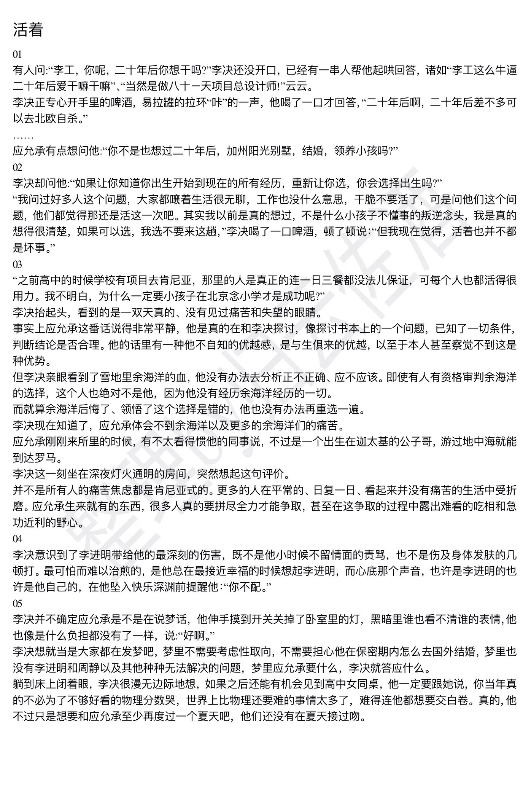
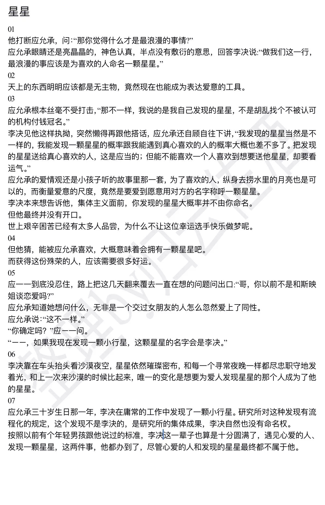
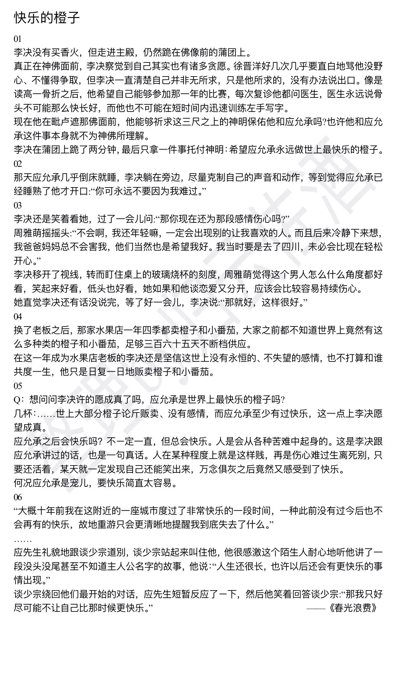
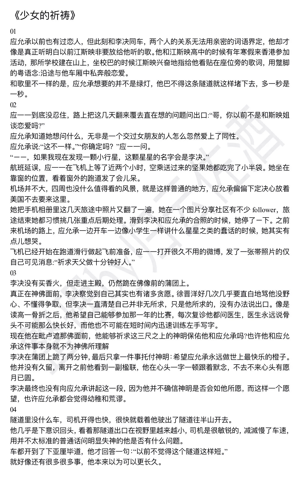
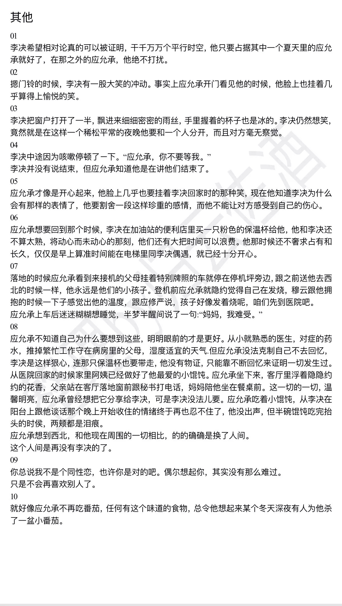

[^耽，慎入]:
又是一年夏天，不知道今年会不会是五十年难得一遇的高温，但我还是在这个炎热的夏天里，在祝融号成功降落火星的这些天里，在517，又想起了这个我最喜欢的原耽be文。
其实作为一个男生，虽然在各种闺蜜和gay蜜的熏陶下看了不少耽文，但是真的能戳中红心的文章真的不多。现在大部分耽文都充斥着少女作者甜美又梦幻一般对爱情的幻想，就好像是童话铸就的一个精致世界，温柔梦幻但不现实。
但私以为耽文相较于言情文最大的魅力就在于耽文的爱情是不容世俗的，爱与社会的冲突与撕裂所产生的挣扎、矛盾、选择，从这种矛盾中诞生的爱情是一种更精神的、更纯粹、更值得追求的最具理想型的”爱”。才是耽文所能传递出来的最具文学性的艺术价值。
扯的有点远了…不过《洛希极限》这本书正是因为这个原因而戳中了我的心的。这个故事美就美在，它很现实。它没有皆大欢喜，没有误会没有争执没有狗血。两个人互相深爱着对方，却因为诞生自原生家庭的一切隐蔽又现实的矛盾最终分开。
应允承就像一颗宇宙中的大行星，有无数卫星拱绕的那种，世间无数的善意和爱围绕着他。他是诞生在迦太基的公子，游过地中海就可以到达罗马；他是官商结合的幸运产物，18岁就能随意选择要读牛津还是剑桥；他是沙漠中的豌豆公主，是李决的小星星……
但李决只是一颗小卫星，他洒脱，看似看开一切，即使研究所的小女生和大妈全部为之倾倒，即使国家的航空总设计师都对其高空轨道领域的专业知识赞赏有加。但是他却是一个想着20年后要去北欧自杀，要借由爱情才能相信人间值得来一趟的，深受原生家庭伤害的可怜人。
在这段爱情中，双方完全是不对等的。应允承拥有一切，他可以为了这段爱情挥霍他的青春，可以任性地从美国飞回西北来开始他的这段爱情。他拥有的太多，所以他能随意牺牲，甚至他不觉得这是牺牲。而李决，光是站在原地不动等他接近，已经是付出了所有。**”洛希极限”一词的含义就是，两个星体所能接受的最大的距离，再靠近一步，卫星就会崩溃碎裂**，就像这个故事的李决一样，他和应允承的故事只能停留在这里，再进一步，他就要粉身碎骨，他的碎片还有可能化作陨星，伤害到应允承，所以他选择了离开。
我喜欢这个故事，喜欢应允承，喜欢李决，但是我更喜欢李决。所以我决定先讲应允承。
应允承是一直幸福的，他是勇敢的王子，是矜贵的山顶。他倾心于李决的洒脱与魅力，心疼于李决的曾经与过去。因此他在这份感情中是勇敢的。在香港，是他带着施勋道别墅中的美好和幻梦，以及深爱李决的自己，征服了李决。也是他，任性地申请了Gap Year，从美国飞回西北的研究所，开启了这段在西北大漠的恋爱。即使到了故事尾声，他也在努力寻找留在国内的机会，甚至愿意为了李决放弃自己最爱的物理，改读国内的商学院。
但是，应允承即使是再勇敢的王子，他也是王子。他知道孩子在北京上学，北京户口意义非凡，他也知道李决很艰难很苦恼。但他无法真正理解雪地上余海洋的血，无法真正理解北京户口对涂雅欣的意义，他也无法真正理解李决在这段感情中的挣扎与焦虑。
附一段余海洋事件的原文（涂雅欣就不附了）：
“如果他太太的观念出了问题，就应该要沟通和纠正，跳下去解决不了这些问题。去北京念书有这么重要吗？余海洋愿意在航天一线奉献，家里人应该都很骄傲才对。之前我说要参加项目回西北，爷爷巴不得我干脆长期在这里工作算了。余海洋一家人的生存条件已经胜过世界上好多人了，之前高中的时候学校有项目去肯尼亚，那里的人是真正的连一日三餐都没法儿保证，可每个人也都活得很用力。我不明白，为什么一定要小孩子在北京念小学才是成功呢？”
李决抬起头，看到的是一双天真的、没有见过痛苦和失望的眼睛。
事实上应允承这番话说得非常平静，他是真的在和李决探讨，像探讨书本上的一个问题，已知了一切条件，判断结论是否合理。他的话里有一种他不自知的优越感，是与生俱来的优越，以至于本人甚至察觉不到这是一种优势。
但李决亲眼看到了雪地里余海洋的血，他没有办法去分析正不正确、应不应该。即使有人有资格审判余海洋的选择，这个人也绝对不是他，因为他没有经历余海洋经历的一切。
而就算余海洋后悔了、领悟了这个选择是错的，他也没有办法再重选一遍。
李决现在知道了，应允承体会不到余海洋以及更多的余海洋们的痛苦。
应允承刚刚来所里的时候，有不太看得惯他的同事说，不过是一个出生在迦太基的公子哥，游过地中海就能到达罗马。
李决这一刻坐在深夜灯火通明的房间，突然想起这句评价。
并不是所有人的痛苦焦虑都是肯尼亚式的。更多的人在平常的、日复一日、看起来并没有痛苦的生活中受折磨。应允承生来就有的东西，很多人真的要拼尽全力才能争取，甚至在这争取的过程中露出难看的吃相和急功近利的野心。
应允承的人生总能选到最优解。在每一个需要做选择的关卡，他都有充足的资源和底气去选最好最漂亮的那个。他并不常摆出争取的姿态，吃相优雅，其实是因为他往往不太用费力争取。
所以应允承从来不理解也不知道真正的牺牲，他即使为了爱情选择了放弃学业飞西北，即使想回国读商学院等等，这些选择都不是真正意义上的牺牲。因为他的一切能支撑得起这些肆意妄为。他就像王子，在温室里长大的花朵，所以他永远体会不到像余海洋、涂雅欣甚至是李决那样非肯尼亚式的痛苦，也永远做不出破罐子破摔的牺牲。他不会为了与李决的这段爱情牺牲与父母的亲情，他只会在父母和李决之间试图权衡，寻找一个最优最漂亮的解决方案，因为他的人生一直是这样，总能选到最优解。
从这个角度看，应允承即使勇敢、热烈，但是其实他真的没有那么爱李决。就像作者自己说的那样：”爱情其实对应允承没那么必要。”
但李决不一样。
李决是我至今最喜欢的原耽男主角，没有之一。他是物理天才，年轻的深空轨道专家，洒脱不羁的行事与特立独行的风格。但这一切下掩埋着的，是一个深受原生家庭伤害的灵魂。
他的莫测的父亲李进明给他造成的伤害是毁灭式的。他的父亲在他和苏煦的恋爱以及他和应允承的恋爱中给了他无数的伤痕，无论是骨折还是向部里对他的举报，都是明晃晃地告诉他，他不配拥有这样的美好。与之相对的是苏煦的父亲苏正国和应允承的父亲应修严。完美的父亲，只存在于李决梦想中的父亲，我把原文贴在下面：
应修严又讲了很长一番话，停顿了片刻说：“我来见你，和你说这些话，我知道并不妥当也不正确。这件事情应允承妈妈还不知道，也永远不会知道。为人夫，为人父，我恳请你体谅。”
李决没有搭话，他想到了李进明，为人父，为人夫，李进明都是失败者，而他是这场失败的产物。
李决这下明白了应允承为什么敢无所保留地、赤诚热烈地去爱人。他从未这样羡慕应允承，并不是羡慕那玻璃花房里的优渥生活，也不是羡慕十八岁的盛大典礼，他羡慕的是——这二十余年，他的父亲何曾有过不忍他吃苦的时刻呢？那年苏正国找上门来，李进明的第一句话是转身对他讲的，李决永远都记得，他的父亲高声质问他：“操/你/妈的你怎么长成了个变态？”
李决猜测自己脸色应该并不太好看，因为连应修严看他的目光都变得温和了。他这时候其实很想要笑，他好像突然松了一口气，原来童话故事也是可以成真的，年纪很小的时候挨了打的晚上他会自己想象一个爸爸，活在脑海里那个爸爸是完美的、温和的、无条件地爱着他，现在他知道了，他并不是在漫无边际做白日梦，是真的有小朋友拥有这样的爸爸。
正因为应允承拥有着李决所拥有的一切，包括这样一个完美的父亲。所以李决最后放弃了接近应允承，停在了洛希极限的距离，然后转头离开。
就像作者所说的那样，如果李决和应允承在一起只要牺牲他自己，他愿意牺牲一切。但李决和应允承在一起，务必会伤害到应允承，会伤害到在完美的父母保护下长大的这个幸运小朋友，会让这个不知道痛苦为何物的天真勇敢的小王子被迫见证他的原生家庭的淋漓的鲜血与他的苦难。
这是，最渴望拥有完美的爸爸，最渴望应允承永远不需要见识到世间苦难的李决无法接受的。李决可以接受越过洛希极限的自己粉身碎骨，换做对应允承的一个永恒拥抱。却无法忍受自己碎裂的碎隙伤害到应允承，还有他身边环绕着的其他爱他的卫星们。
所以李决放弃了爱情，即使他需要这一场爱情才能认为这人间来一趟，即使应允承是他此生最爱的橙子。
或者与其说李决放弃了爱情，不如说李决从始至终就不相信这段爱情能够永恒。
就像文章的末尾说的那样：李决还是不相信世间有永恒的，不失望的爱情，也不打算和谁共度一生，他只是日复一日地贩卖橙子和小番茄；也如故事的刚开始，施勋道的别墅暧昧结束后，李决告诉应允承”到了美国要好好读书”；又如李决托满天神佛保佑的不是他和应允承的恋爱，而只是”希望应允承永远是世界上最快乐的橙子。”他从未奢求过自己能够永远一段永恒的、完美的爱情。他比谁都知道，阴影下的自己不可能也不配拥有。甚至于最后去美国的努力与挣扎，也只是他做梦似的试着全力以赴一下，然后接受现实。
由于原生家庭带来的伤痕，李决从始至终是绝望的，从这段恋情刚开始，他就一直类似于余海洋一样在日常的、日复一日的日子里遭受折磨。而这种折磨是快乐的王子应允承所不能理解的，也是最爱应允承的李决永远不想让他理解的。所以李决从始至终都没有和应允承说过什么，包括李进明的事，申请去美利坚等等。他不需要自己的豌豆公主理解并分享自己的伤痕，他只需要一个没有经历过这些伤痛的小王子在他身边，让他确信人间值得来一趟。
所以，即使到了分手很久之后，面对和应允承很像很像的周雅萌，李决的愿望，也只是希望他能一直当一个快乐的橙子。
附一下原文：
这天周雅萌在办公室接完家里的电话就跟李决抱怨：“我妈总觉得我是高中生，每天打电话都要问一遍我开心不开心。”
“这样不好吗？”李决问她。
周雅萌撇嘴：“嗨，你以为她是真的温柔妈妈啊？她是亏心，我读研的时候谈了个男朋友，是四川人，我本来想跟他一块儿回四川，你知道那边不是也有基地嘛，我爸妈就死活不同意，我家里，诶你可能也听说过，我爸年轻的时候倒腾房地产挣了些钱，他们就觉得我前男友家庭条件太一般，也不愿意我去西昌，觉得我吃不了那个苦。当然，我承认他们说的没错，但当时我还是气得够呛，分手的时候也特别伤心，打那时起我妈就特别怕我想不开。我都跟她解释过八千次，她说的对，我吃不了苦，我也不会想不开。”
李决一直欣赏周雅萌这种坦率可爱，他对着周雅萌笑了笑。
这个笑令周雅萌又回到咬到泡椒的那顿晚餐，她现在也不怕尴尬了，直直白白跟李决说：“李工，你笑起来很帅啊。”
李决还是笑着看她，过了一会儿问：“那你现在还为那段感情伤心吗？”
周雅萌摇摇头：“不会啊，我还年轻嘛，一定会出现别的让我喜欢的人。而且后来冷静下来想，我爸爸妈妈总不会害我，他们当然也是希望我好。我当时要是去了四川，未必会比现在轻松开心。”
李决移开了视线，转而盯住桌上的玻璃烧杯的刻度，周雅萌觉得这个男人怎么什么角度都好看，笑起来好看，低头也好看，她如果和他谈恋爱又分开，应该会比较容易持续伤心。
她直觉李决还有话没说完，等了好一会儿，李决说：“那就好，这样很好。”
（这段真的好好哭）
所以，综上来看，两个人的be是必然的，即使谁都没有错，没有争吵，没有狗血。
这种令人感到无力的悲剧是最具艺术美的，就像黑格尔说的那样：“悲剧的本质并非源于一个人物是正确的而其他人都是错的，也非源于善与恶的冲突，而是来源于这样一种冲突，在这个冲突当中所有的人物都是对的，因此，悲剧是‘正确与正确的对抗’，并发展至它合乎逻辑的结局。”
这也是我除却两位主角的个人魅力以外，喜欢这个故事的很大一部分原因，所有人都没有错，却造成了悲剧。也就是说故事反应下的社会结构必然是有所畸形的，而这正是我们需要付诸努力的地方。
好了正经书评到这里就结束了。除了角色魅力以外，几杯大大冷静又暗流汹涌的文笔，加上天文物理题材的理工科式的浪漫也特别抓人心弦。最后私人私自附一下lofter上某位大大整理的洛希极限的摘抄@归云佐酒，侵删~




